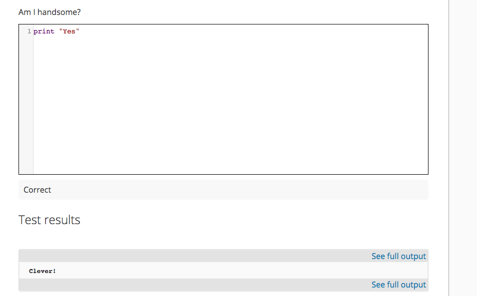
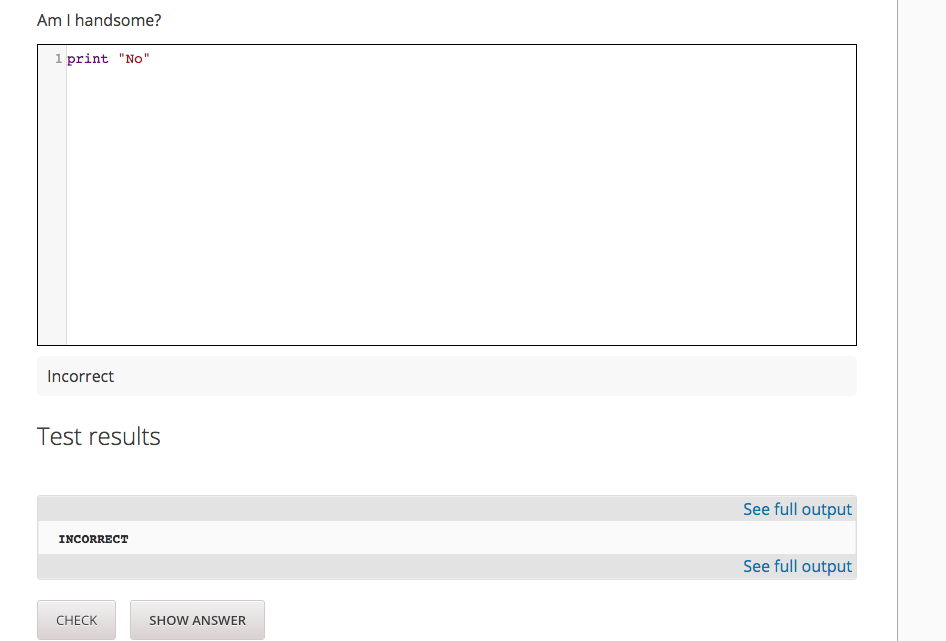
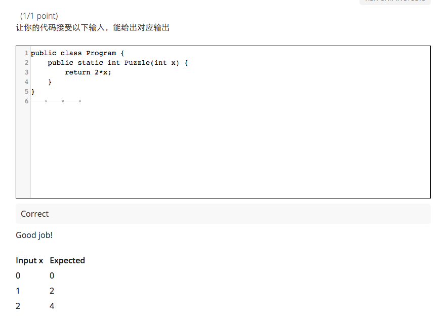

友情提醒： 坑多慎入 : )
但作为geek的你会很喜欢这部分的
首先感谢@DatoChan分享的经验 ：）
External Grader
说Code Grader之前，我们先来说说External Grader
这是个啥
An external grader is a service that receives learner responses to a problem, processes those responses, and returns feedback and a problem grade to the edX platform. You build and deploy an external grader separately from the edX platform.
这是一种用于评分的服务，这种评分机制作为独立的服务，接收学生的答题答案，对答案做出评估后，返回评估结果给edX platform.
技术上的实现主要用到了消息队列，在edx中被封装为xqueue
想象空间
这里充满想象的空间，好比可以使用自然语言的成果去自动对答案进行评分，又好比学生可以提交图片，平台使用图片识别去解读它。以及我们稍后介绍的，Code Grader，用于评估学生提交代码的正确性
如此一来edx platform就可以专注在教育领域，把评分规则交由其他服务，通过这种机制 ，edx platform提高了内聚性的同时，带来了极大的扩展性
有没有觉得似曾相似，没错，就是《Unix编程艺术》鼓励的
Do one thing and do well
而后通过组件之间的协作和组合来解决问题，而不是提供大而全的方案。
edx的开放性和可扩展性无疑给大家提供了五彩缤纷的可能
Code Grader
Code Grader只是External Grader的一个特例，特殊在学生提交的答案是代码，Grader的任务是运行和评估代码的正确性。edX实现了xserver，这是个用以评估Python代码的服务，如果需要，我们可以打造评估任意代码的服务，技术上无非是在Grader里调用解释器而已。
好想写一个用于评估Hy的Grader呀.(Hy是Python实现的Lisp,与python几乎无缝对接)
这种拓展性对计算机相关的课程极有助益，学生可以在线编写运行代码，而不必搭建自己的开发环境了。如果涉及数据库的话，后台都可以一并搭建好，学生有一个浏览器即可，而不必折腾一整套编程环境
Talk is cheap，just do it
External Grader的核心机制是xqueue
xqueue
XQueue defines an interface for the LMS to communicate with external grader services.
一语道尽
流程：
- The learner either enters code or attaches a file for a problem, then selects Check.
- The external grader pulls the code from XQueue.
- The external grader runs the tests that you created on the code.
- The external grader returns the grade for the submission, as well as any results in a string, to XQueue.
- The XQueue delivers the results to the edX Learning Management System.
- The learner sees the problem results and the grade.
在grader_payload可以指名test.py.如：{"grader": "ps02/bisect/grade_bisect.py"}
通过输入输出来测试！在前后输入连个变量，然后测试结果。可以参考官方的示例
可以直接使用py.test:PythonGrader.py
这是test case的问题。要求必须写成函数接受参数？写测试用例 每一个test
安装与配置
安装
- 首先在
playbooks/edx_sandbox.yml中加入- xserver到nginx_sites和roles中。 - 编辑
roles/xserver/defaults/main.yml,加入
XSERVER_GRADER_DIR: "{{ xserver_data_dir }}/data/content-test-xserver"
XSERVER_GRADER_SOURCE: "https://github.com/antoviaque/xserver-grader.git"
XSERVER_LOCAL_GIT_IDENTITY: "{{ secure_dir }}/files/git-identity"
XSERVER_GIT_IDENTITY: "YOUR_GITHUB_NAME"
之后重新执行ansible-playbook来安装xserver.安装完成后执行sudo /edx/bin/supervisorctl status应该能看到xserver依据跑起来了。内部端口为8050，外部端口为18050.
配置
编辑/edx/app/xqueue/xqueue.env.json，添加你自己的queuename，指名它的url
{
"LOCAL_LOGLEVEL": "INFO",
"LOGGING_ENV": "sandbox",
"LOG_DIR": "/edx/var/logs/xqueue",
"RABBIT_HOST": "localhost",
"S3_BUCKET": "sandbox-bucket",
"S3_PATH_PREFIX": "sandbox-xqueue",
"SYSLOG_SERVER": "localhost",
"XQUEUES": {
"certificates": null,
"edX-DemoX": "http://localhost:8050",
"java-queue": "http://localhost:1710",
"open-ended": null,
"open-ended-message": null,
"test-pull": null
},
"XQUEUE_WORKERS_PER_QUEUE": 12
}
在studio中添加题目，类似以下这种
<problem title="Embedded Code Box" markdown="null">
<text>Blabla</text>
<coderesponse>
<textbox rows="10" cols="70" mode="python" tabsize="4"/>
<codeparam queuename="edX-DemoX">
<initial_display/>
<answer_display>the definitive answer</answer_display>
<grader_payload>{"grader": "grade.py"}</grader_payload>
</codeparam>
</coderesponse>
</problem>
保存，发布，就该就好啦
更具体的说明，参考create-a-code-response-problem
填坑
有个坑叫DatabaseError: (1406, "Data too long for column 'lms_callback_url' at row 1") ，解决方案为：
sudo mysql
use xqueue;
alter table queue_submission modify lms_callback_url VARCHAR (255);
此外不要在studio中CHECK你的答案，否则会说Error: No grader has been set up for this problem.
Run it
 
重启服务
- sudo /edx/bin/supervisorctl restart xqueue_consumer
- sudo /edx/bin/supervisorctl restart xqueue
Java Grader
参考这里就好：java-grader

其他语言的实现，可以参考这个，或是xserver
设计原则
Building an External Grader给出了构建自己的External Grader的指导原则
- Scale
- Security
- Reliability and Recovery
- Testing
2016.01.19更新
至于代码judge部分，建议使用专业的judge开源项目，比如为acm竞赛准备的评测组件
以及这个工具也很棒:glot，他们提供了一套完备的解决方案
2016.04.19更新
使用pytest测试
这个作为测试的方法，而执行的环境放在docker里，采用-v来映射目录。让代码执行完
采用subprogrem 还是 docker-py，先写出要运行的命令，然后再调用
用后即删
包括文件和docker 容器
sudo docker run --rm -v /tmp/test:/pydata kleetaurus/compilebox python /pydata/test.py
如何使用远程的docker